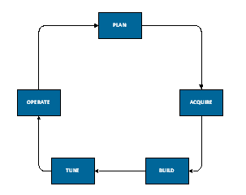
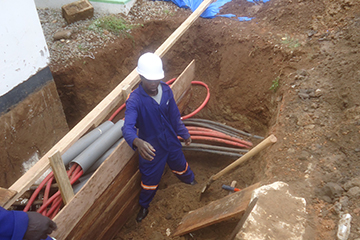
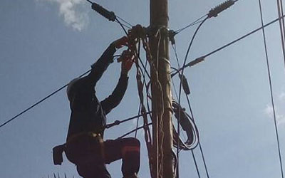
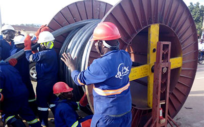
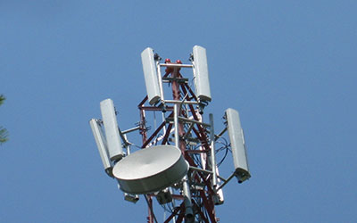
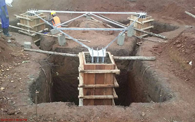
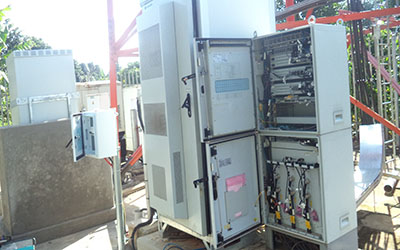
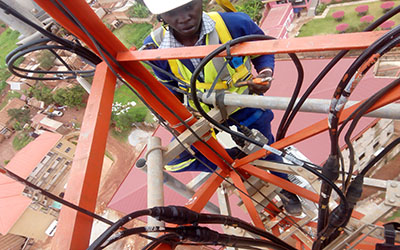

ATX Technology offers telecom infrastructure services and products encompassing supply of equipment and infrastructure services for Telecom Network Operator, ISPs, Equipment Vendors, Telecom Service Providers and Utilities. We have a complete portfolio of services to rollout and operate your telecommunications infrastructure including planning, acquisition, network build, operations and maintenance. This enables you to run a leaner and more efficient operation focused on your core business which is service delivery to your customers.

Technologies we support
We provide a range of solutions covering applications in the following areas:
Cellular networks.
Broadcast networks.
Microwave networks.
Fixed Line Networks.
What we do
We design and manage the delivery of the best solutions for our customers’ requirements. By tailoring our products and services to fit your needs we can ensure that you maximise the efficiency of your rollout and network maintenance.
Professional Services
Network consulting (including planning and design)
Systems integration (including network migration, or “transformation”)
Network optimization
Project Management
Technical Services
Deployment (including installation and commissioning)
Maintenance (including repair and replacement)
Support (including help desk and troubleshooting)
Training and education
Managed Services
Network outsourcing
Hosted and managed services and applications

OSP Construction
ATX Technology provides the necessary underground construction services required in the installation of all urban utilities. We apply our construction expertise and knowledge to the congested urban utility
Copper & Fiber Optic Network Construction
ATX technology specializes in all aspects of copper and fiber network construction and deployment of new technologies. ATX technology specializes in fibre optic network turnkey solutions and network

Aerial Cable Construction
ATX Technology has experienced linemen, supervisors and quality control personnel. Our construction crews are knowledgeable with various strand configurations, fibre, and coax. to provide all the services to complete our customer’s aerial projects

Underground Cable Construction
We apply our construction expertise and knowledge to the congested urban utility battlefield all the while exercising exemplified public safety and conscience consideration to environmental needs like: installation of water, sanitary sewer

Wireless Network Planning
ATX Technology provides all aspects of acquisition and planning ,RF Planning & Optimisation and In-building Solutions with wide range of experience in the design and installation of neutrally hosted Pico solutions

Satellite Receiving Station Construction
ATX Technology provides turnkey Wireless Infrastructure Services like:Satellite – VSAT Installation,range of RF equipment rigging, replacement, Commissioning Services and Emergency support, troubleshooting and maintenance

Inside Plant Cable – Structured Cabling
We perform premise wiring services for corporations and other entities. These services include installing, repairing and maintaining telecommunications infrastructure

Wireless Network Deployment
ATX Technology’s own site build teams guarantee sites are deployed to agreed timescales and exceptional quality. Our work includes removal, installation and relocation of operators’ kit, swap out, upgrades, electrical installation and rigging
Atx Technology Telecom Critical Power & Cooling – Equipment Services
ATX Technology procures and installs critical power and cooling equipment for data centres, computer rooms, telecom sites, switch sites etc. Our focus is on providing our clients with the “best” solution to meet their needs